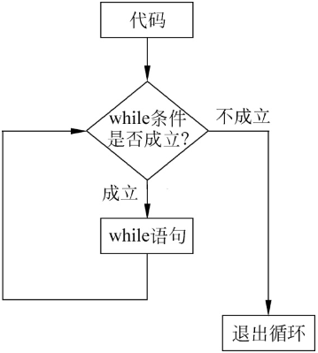

首页 > 编程笔记
JS while和do while循环语句的用法
JavaScript 支持 while 循环和 do while 循环。
while 循环的执行过程如图1所示。
while 循环的语法结构如下：
while 循环的条件里需要传递表达式，跟 if 语句一样，计算结果可以是布尔类型，也可以是逻辑意义上的真假值，还可以使用运算符组成复杂的表达式。
大括号中的语句则是要重复执行的代码，每执行一次，while 中的条件就会重新判断一次。
例如，如果要打印 5~10 的数字，代码如下：
另外，语句块中的两行代码也可以简写成一行：
do...while 的语法结构如下：
来看一个例子，假设 n 的值为 5，但是这次无论 while 条件是否成立，都要先打印一次 n 的值，代码如下：
while 循环
JavaScript 中的 while 是最简单的一种循环语句，只需满足一定条件就会重复执行一段代码，而当条件不再满足的时候，循环就会停止。使用循环语句可以避免重复编写多次同样的代码，进而提高开发效率。while 循环的执行过程如图1所示。
while 循环的语法结构如下：
while(条件){
语句块;
}

图1：while 循环执行过程
图1：while 循环执行过程
while 循环的条件里需要传递表达式，跟 if 语句一样，计算结果可以是布尔类型，也可以是逻辑意义上的真假值，还可以使用运算符组成复杂的表达式。
大括号中的语句则是要重复执行的代码，每执行一次，while 中的条件就会重新判断一次。
例如，如果要打印 5~10 的数字，代码如下：
let n=5;
while(n<=10){
console.log(n);
n++;
}
示例中 n 的初始值为 5，然后在 while 条件中判断，如果 n 小于或等于 10，则就打印出 n 的值，打印完之后对 n 进行加 1 操作，之后继续计算 while 中的条件表达式的值，如果 n 仍然小于或等于 10，则继续打印 n 的值，直到 n 等于 11 时，条件为假，循环就中止了。另外，语句块中的两行代码也可以简写成一行：
console.log(n++)
do...while语句
JavaScript 中的 do...while 循环语句可以让条件无论是否为真时，都先执行一次 do 语句块中的代码，后续运行过程则与 while 循环一致，这种循环比 while 循环相对不常用，所以熟悉它的语法即可。do...while 的语法结构如下：
do{
语句块;
}while(条件)
来看一个例子，假设 n 的值为 5，但是这次无论 while 条件是否成立，都要先打印一次 n 的值，代码如下：
let n=5;
do{
console.log(n);
}while(n>10);
关注公众号「站长严长生」，在手机上阅读所有教程，随时随地都能学习。内含一款搜索神器，免费下载全网书籍和视频。

微信扫码关注公众号